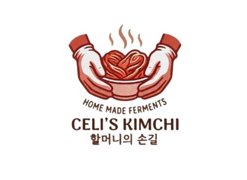
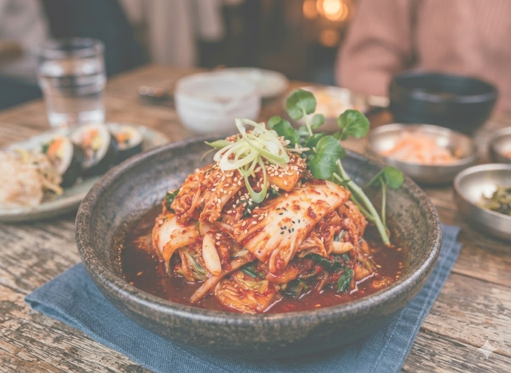
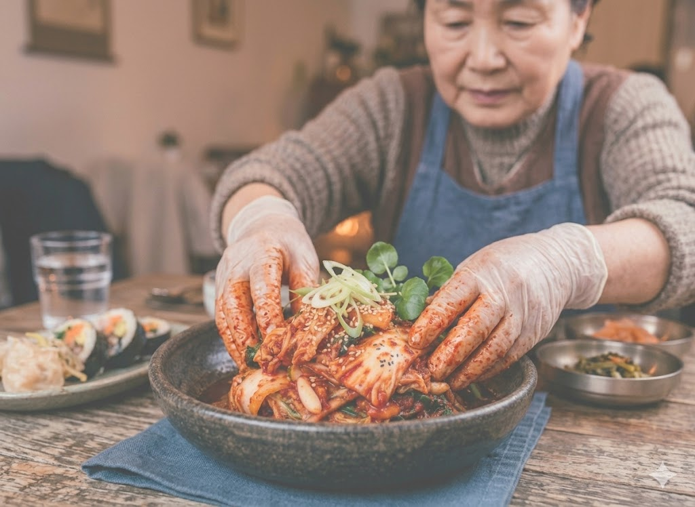

Project ini berfokus pada pengembangan visual dan narasi seputar kimchi, yaitu hidangan fermentasi sayuran tradisional Korea yang mengombinasikan sawi putih atau lobak dengan pasta bumbu pedas kaya rempah seperti cabai merah, bawang putih, dan jahe. Melalui proses fermentasi alami, kimchi tidak hanya menghasilkan profil rasa yang kompleks antara asam, pedas, dan gurih (umami),tetapi juga menjadi sumber probiotik yang sangat bermanfaat bagi kesehatan pencernaan. Dengan menonjolkan estetika warna merah yang khas dan tekstur sayuran yang renyah, project ini bertujuan mempresentasikan kimchi sebagai elemen kuliner yang sehat, autentik, sekaligus modern untuk kebutuhan latar belakang visual restoran maupun konten edukasi budaya.
Proses pembuatan kimchi dimulai dengan tahap persiapan sayuran utama, di mana sawi putih dibelah secara memanjang dan dilumuri garam kasar di setiap sela daunnya untuk mengeluarkan kadar air. Sawi dibiarkan layu selama beberapa jam hingga tekstur batangnya menjadi lentur, lalu dibilas bersih dengan air mengalir sebanyak tiga kali untuk memastikan sisa garam tidak membuat hidangan terlalu asin. Sembari menunggu sawi kering, Anda perlu menyiapkan pasta bumbu yang terbuat dari bubur tepung beras ketan yang dimasak hingga mengental, kemudian dicampur dengan bubuk cabai merah Korea (gochugaru), parutan bawang putih, jahe, kecap ikan, serta irisan lobak dan daun bawang untuk menciptakan profil rasa yang kaya.
Setelah pasta bumbu siap, langkah selanjutnya adalah membalurkan campuran merah tersebut ke setiap lembar daun sawi secara merata hingga seluruh bagian tertutup sempurna. Sawi yang telah berbumbu kemudian disusun rapat di dalam wadah kedap udara, dengan menyisakan sedikit ruang di bagian atas agar gas hasil fermentasi memiliki tempat untuk berkembang. Kimchi didiamkan pada suhu ruangan selama satu hingga dua hari untuk memulai proses fermentasi alami yang menghasilkan bakteri baik atau probiotik, lalu dipindahkan ke dalam lemari es agar rasa asam, pedas, dan gurihnya menyatu dengan sempurna serta tekstur sayurannya tetap renyah saat dinikmati.
